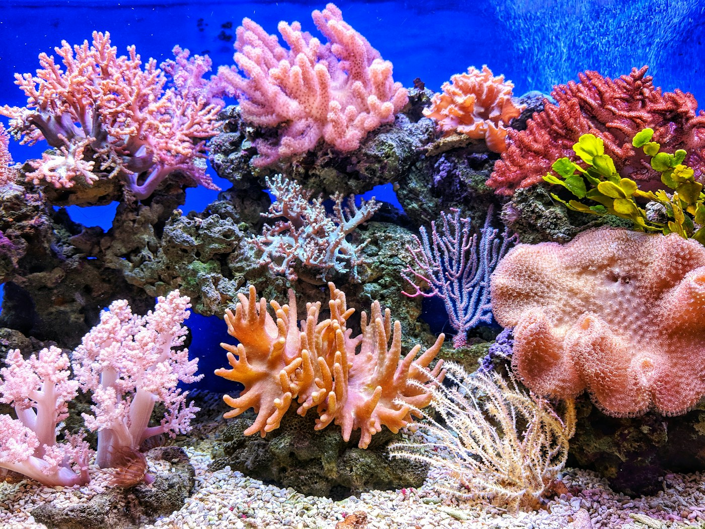

Start with place
We document habitat boundaries, seasonal conditions, human use, and existing knowledge before selecting indicators. The aim is to understand where a measurement sits in a lived landscape.
SCIENCE / THE BLUE ATLAS APPROACH
We bring ecological measurements, climate context, and place-based knowledge together — because no single dataset can tell the whole story of a coast.
A coastal ecosystem’s capacity to persist and recover emerges from relationships: among species, habitats, physical forces, and people.
We therefore treat resilience as a set of questions rather than a score. What pressures are present? Which processes buffer them? Who has access to those benefits, and how might that change? This framing resists easy comparisons between unlike places and keeps ecological findings connected to their social and physical context.
Our work is designed to describe patterns and uncertainties, not promise that nature can offset every climate risk. Habitat protection complements — but never replaces — emissions reduction, equitable planning, and the expertise of communities who live with coastal change.
We document habitat boundaries, seasonal conditions, human use, and existing knowledge before selecting indicators. The aim is to understand where a measurement sits in a lived landscape.
Field protocols record when, where, and under what conditions observations were made. Repeated sampling helps separate a lasting shift from seasonal variation or a one-day anomaly.
Ecological observations are read alongside ocean, weather, and shoreline information. We state where data overlap, where they do not, and which interpretations remain provisional.
Findings are shared in formats that partners can question and use. Feedback is part of interpretation, not a final communications step after the analysis is complete.
ECOLOGY × CLIMATE × COMMUNITY
Each lens has its own evidence and limits. Putting them in conversation can surface useful connections without pretending they are interchangeable.
Habitat extent and structure, species observations, connectivity, and visible signs of disturbance.
WHAT IS PRESENT — AND HOW IS IT CHANGING?Wave energy, water levels, shoreline form, heat, and the time scales at which these forces act.
WHICH PROCESSES SHAPE THE PLACE?Use, access, stewardship, local priorities, and the distribution of risks and possible benefits.
WHO EXPERIENCES CHANGE — AND WHO DECIDES?
We distinguish observed patterns from interpretation, and interpretation from recommendation. Sampling gaps and uncertainty belong in the story.
Coordinates, local knowledge, and ecological records can be sensitive. We consider consent, care, and potential harm before making information public.
Plain-language protocols and clear metadata help others understand how an observation was made and whether it is useful for their question.
Research partnerships should recognize contributions, return useful outputs, and create room for partners to shape how findings are used.
A map can show where a habitat is. Listening helps us understand what that place means.
BLUE ATLAS FIELD PRINCIPLE / 04